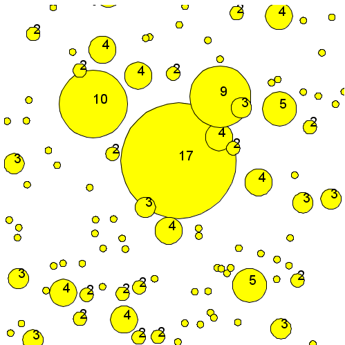

Multi-level architecture
The multi-level architecture offers the modeler the following possibilities: the declaration of a species as a micro-species of another species, the representation of an entity as different types of agent (i.e., GAML species), the dynamic migration of agents between populations.
Index
- Declaration of micro-species
- Access to micro-agents / host agent
- Representation of an entity as different types of agent
- Dynamic migration of agents
- Example
Declaration of micro-species
A species can have other species as micro-species. The micro-species of a species is declared inside the species’ declaration.
species macro_species {
species micro_species_in_group {
}
}
In the above example, “micro_species_in_group” is a micro-species of “macro_species”. An agent of “macro_species” can have agents “micro_species_in_group” as micro-agents. Agents of “micro_species_in_group” have an agent of “macro_species” as “host” agent.
As the species “micro_species_in_group” is declared inside the species “macro_species”, “micro_species_in_group” will return a list of “micro_species_in_group” agent inside the given “macro_species” agent.
global
{
init {
create macro_species number:5;
}
}
species macro_species
{
init {
create micro_species_in_group number:rnd(10);
write "the macro species named "+name+" contains "+length(micro_species_in_group)+" micro-species.";
}
species micro_species_in_group {
}
}
experiment my_experiment type: gui {
}
In this above example, we create 5 macro-species, and each one of these macro-species create a random number of inner micro-species. We can see that “micro_species_in_group” refers to the list of micro-species inside the given macro-species.
Access to micro-agents, host agent
To access to micro-agents (from a macro-agent), and to host agent (from a micro-agents), you have to use two built-in attributes.
The members built-in attribute is used inside the macro-agent, to get the list of all its micro-agents.
species macro_species
{
init {
create first_micro_species number:3;
create second_micro_species number:6;
write "the macro species named "+name+" contains "+length(members)+" micro-species.";
}
species first_micro_species {
}
species second_micro_species {
}
}
The host built-in attribute is used inside the micro-agent to get the host macro-agent.
species macro_species {
micro_species_in_group micro_agent;
init {
create micro_species_in_group number:rnd(10);
write "the macro species named "+name+" contains "+length(members)+" micro-species.";
}
species micro_species_in_group {
init {
write "the micro species named "+name+" is hosted by "+host;
}
}
}
NB: We already said that the world agent is a particular agent, instantiated just once. In fact, the world agent is the host of all the agents. You can try to get the host for a regular species, you will get the world agent itself (named as you named your model). You can also try to get the members of your world (from the global scope for example), and you will get the list of the agents presents in the world.
global
{
init {
create macro_species number:5;
write "the world has "+length(members)+" members.";
}
}
species macro_species
{
init {
write "the macro species named "+name+" is hosted by "+host;
}
}
Representation of an entity as different types of agent
The multi-level architecture is often used in order to represent an entity through different types of agent. For example, an agent “bee” can have a behavior when it is alone, but when the agent is near from a lot of agents, he can changes his type to “bee_in_swarm”, defined as a micro-species of a macro-species “swarm”. Other example: an agent “pedestrian” can have a certain behavior when walking on the street, and then change his type to “pedestrian_in_building” when he is in a macro-species “building”. You have then to distinguish two different species to define your micro-species:
- The first can be seen as a regular species (it is the “bee” or the “pedestrian” for instance). We will name this species as “micro_species”.
- The second is the real micro-species, defined inside the macro-species (it is the “bee_in_swarm” or the “pedestrian_in_building” for instance). We will name this species as “micro_species_in_group”. This species has to inherit from the “micro_species”.
species micro_species {
}
species macro_species
{
species micro_species_in_group parent: micro_species {
}
}
Dynamic migration of agents
In our example about bees, a “swarm” entity is composed of nearby flying “bee” entities. When a “bee” entity approaches a “swarm” entity, this “bee” entity will become a member of the group. To represent this, the modeler lets the “bee” agent change its species to “bee_in_swarm” species. The “bee” agent hence becomes a “bee_in_swarm” agent. To change species of agent, we can use one of the following statements: capture, release, migrate.
The statement capture is used by the “macro_species” to capture one (or several) “micro_species” agent(s), and turn it (them) to a “micro_species_in_group”. You can specify which agent (or list of agents) you want to capture by using the facet target. The facet as is used to cast the agent from “micro_species” to “micro_species_in_group”. You can use the facet return to get the newly captured agent(s).
capture target:micro_species as:micro_species_in_group;
The statement release is used by the “macro_species” to release one (or several) “micro_species_in_group” agent(s), and turn it (them) to a “micro_species”. You can specify which agent (or list of agents) you want to release by using the facet target. The facet as is used to cast the agent from “micro_species_in_group” to “micro_species”. The facet in is used to specify the new host (by default, it is the host of the “macro_species”). You can use the facet return to get the newly released agent(s).
release target:list(micro_species_in_group) as:micro_species in:world;
The statement migrate, less used, permits agents to migrate from one population/species to another population/species and stay in the same host after the migration. Read the GAML Reference to learn more about this statement.
//: # (endConcept|multi_level)
Example:
Here is an example of micro_species that gather together in macro_species when they are close enough.

model multilevel
global {
int release_time <- 20;
int capture_time <- 100;
int remaining_release_time <- 0;
int remaining_capture_time <- capture_time;
init {
create micro_species number:200;
}
reflex reflex_timer {
if (remaining_release_time=1)
{
remaining_release_time <- 0;
remaining_capture_time <- capture_time;
}
else if (remaining_capture_time=1)
{
remaining_capture_time <- 0;
remaining_release_time <- release_time;
}
remaining_release_time <- remaining_release_time - 1;
remaining_capture_time <- remaining_capture_time - 1;
}
reflex capture_micro_species when:(remaining_capture_time>0 and flip(0.1)) {
ask macro_species {
list<micro_species> micro_species_in_range <- micro_species at_distance 1;
if (micro_species_in_range != []) {
do capture_micro_species(micro_species_in_range);
}
}
ask micro_species {
list<micro_species> micro_species_list_to_be_captured <- micro_species at_distance 1;
if(micro_species_list_to_be_captured != []) {
create macro_species {
location <- myself.location;
add item:myself to:micro_species_list_to_be_captured;
do capture_micro_species(micro_species_list_to_be_captured);
}
}
}
}
}
species micro_species skills:[moving] {
geometry shape <- circle(1);
aspect base {
draw shape;
}
reflex move{
do wander;
}
}
species macro_species {
geometry shape <- circle(1) update:circle(length(members));
species micro_species_in_group parent:micro_species {
}
action capture_micro_species(list<micro_species> micro_list) {
loop mic_sp over:micro_list {
capture mic_sp as:micro_species_in_group;
}
}
reflex release_reflex when:(remaining_release_time>0 and flip(0.1)) {
release members as:micro_species /*in:world*/;
do die;
}
aspect base {
draw shape;
draw text:string(length(members)) color:#black size:4;
}
}
experiment MyExperiment type: gui {
output {
display MyDisplay type: java2D {
species macro_species aspect: base;
species micro_species aspect: base;
}
}
}